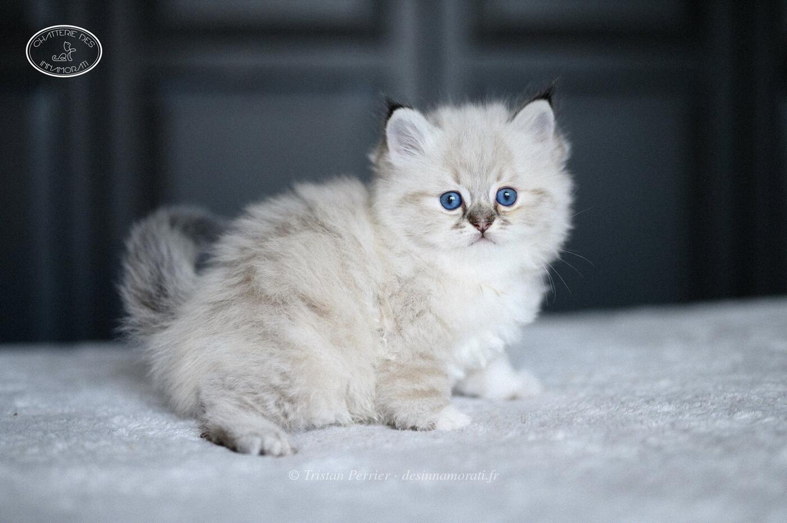

RobeMâle · Seal tabby point
Naissance3 novembre 2019
StatutAdopté
Album14 photos, de décembre 2019 à décembre 2021


Photos réduites et marquées. Elles appartiennent à la Chatterie des Innamorati et ne peuvent pas être reprises dans une annonce.